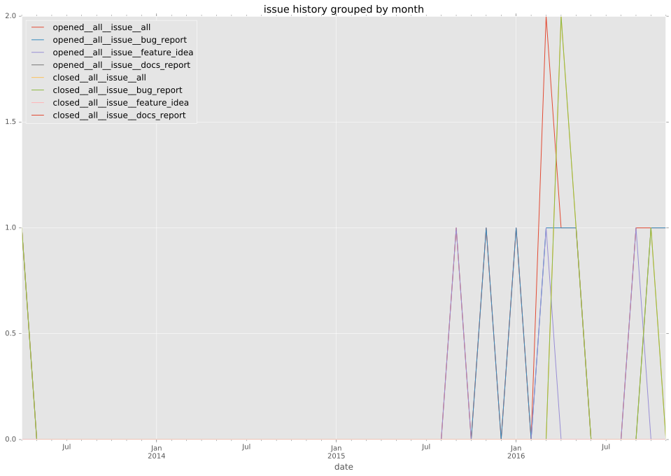
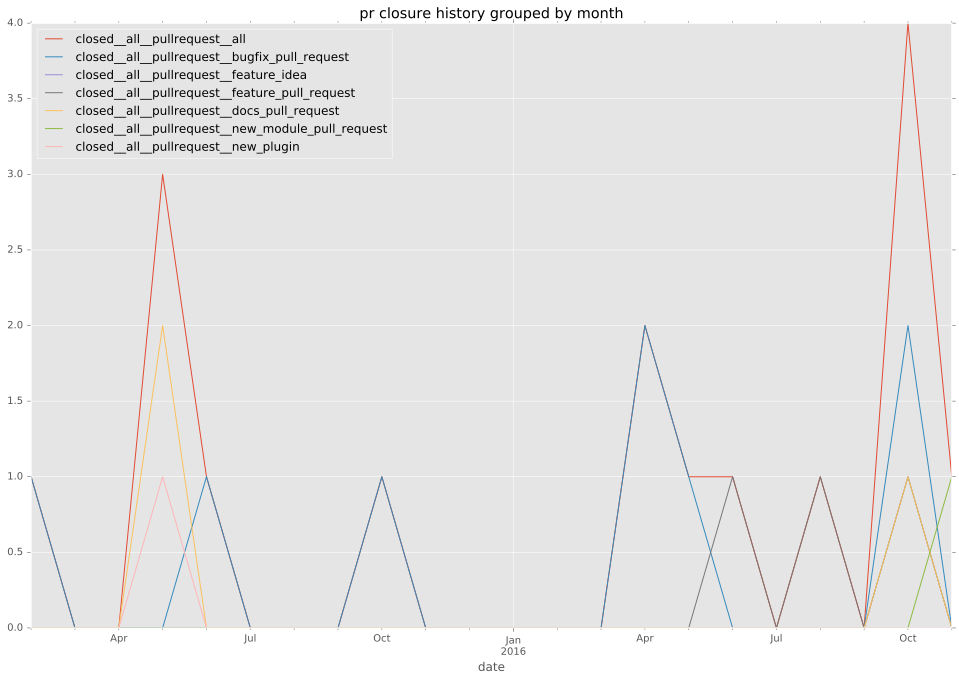

authors
maintainers
- UnderGreen
contributors
- UnderGreen : 74 commits
- frogu : 16 commits
- mscherer : 10 commits
- resmo : 8 commits
- bmillemathias : 6 commits
- alxsey : 4 commits
- nalabelle : 3 commits
- abadger : 2 commits
- le9i0nx : 1 commits
- jmgilman : 1 commits
- adriagalin : 1 commits
total issue counts
bugfix pull request: 7
pullrequest: 22
docs pull request: 4
feature pull request: 10
feature idea: 3
issue: 9
new plugin: 1
bug report: 6
issue history

pullrequest history

days open by issue type
feature pull request
count: 11
std: 119.937559513
min: 2
max: 295
median: 17.0
mean: 95.2727272727
all
count: 37
std: 80.0987097481
min: 0
max: 295
median: 0.0
mean: 33.5945945946
pullrequest
count: 0
std: nan
min: nan
max: nan
median: nan
mean: nan
docs pull request
count: 8
std: 2.77746029932
min: 0
max: 6
median: 0.0
mean: 1.5
bugfix pull request
count: 12
std: 1.9462473604
min: 0
max: 5
median: 0.0
mean: 0.833333333333
feature idea
count: 0
std: nan
min: nan
max: nan
median: nan
mean: nan
issue
count: 0
std: nan
min: nan
max: nan
median: nan
mean: nan
new plugin
count: 2
std: 0.0
min: 0
max: 0
median: 0.0
mean: 0.0
bug report
count: 4
std: 84.5118334909
min: 0
max: 170
median: 1.5
mean: 43.25
closures grouped by total days open